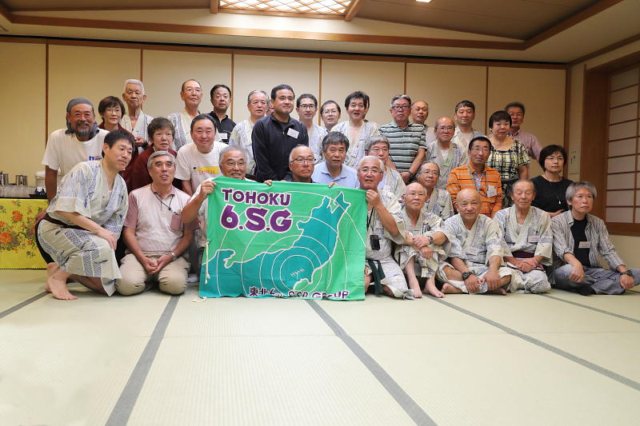
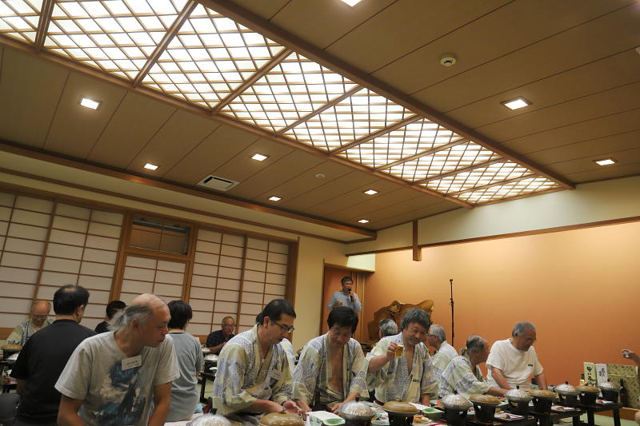
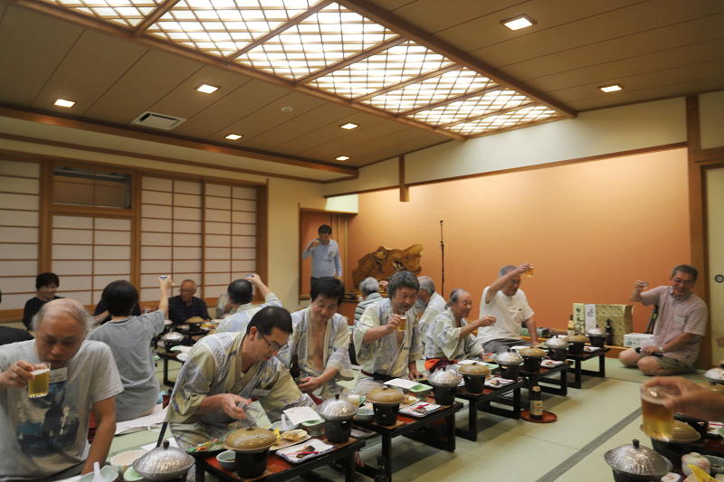
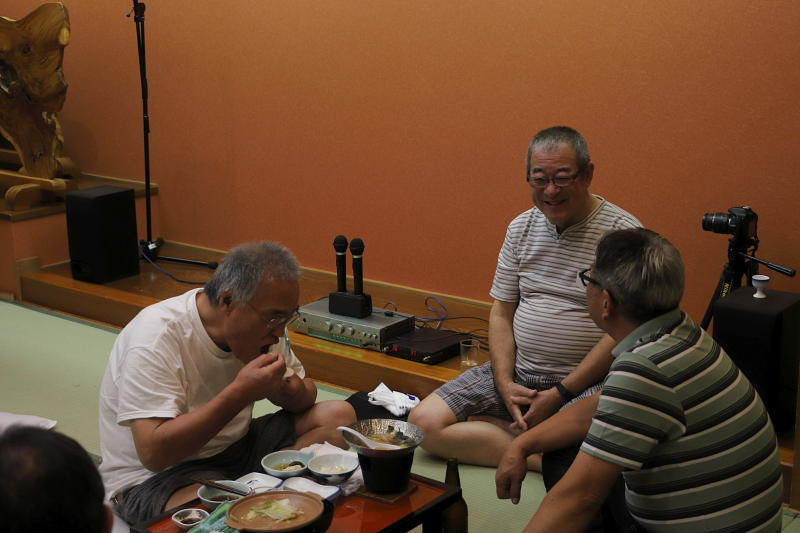
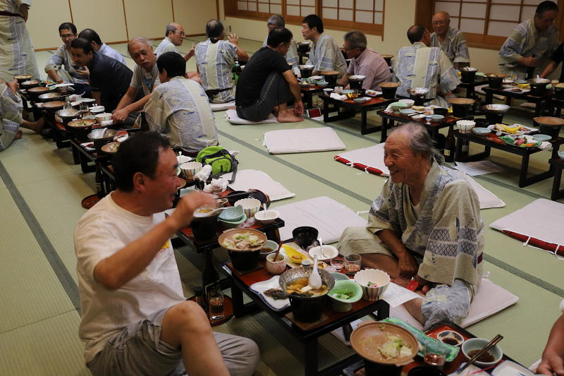

|
◎ 第48回東北6m SSB Group & 全国VSG Meeting in あおもり(深浦町）(21-22.Sep.2019) 第48回東北6m SSB Group & 全国VSG Meeting・あおもり大会は、去る9月21日～22日の両日、青森県西津軽郡深浦町で開催されました。深浦町は青森県の日本海側に位置する、世界自然遺産「白神山地」や神秘の湖沼群、十二湖と白神岳にアクセスする町。 宿泊場所は、津軽西海岸の名湯・黄金崎不老ふ死温泉。広大な日本海を望む高台の露天風呂や波打ち際の海岸露天風呂が人気の温泉宿。 われわれには"JAの珍GLの１つ？"と思われる「PN90」でも注目されています。 今年は異常気象が続き、台風17号が西日本に接近中で遠く離れた青森にも影響が及び、晴天なら日中はコバルトブルーに輝く日本海や、茜色に輝きながら沈む夕日を眺める事の出来る景勝地ですが、今回は秋雨前線の影響もあり残念ながら夕日を眺める事は出来ませんでした。 恒例の土曜日(21日)の”懇親会”は参加者全員の記念撮影の後、一年ぶりのアイボールQSOを楽しみました。 翌日曜日(22日)の講演は、「6ｍ-EMEのすすめ」と題して、JA7QVI・平間さんによるSSNサイクルの最低期の電離層伝搬をカバーする"月面反射通信”の初歩的な、JT65aモードによる運用方法などの解説と共に、2019年内に行われるEMEによるDX-Peditionなどの紹介がありました。 ミーティングは次回開催地の福島県に「6SG大会旗」の伝達式を行い、遠距離からの参加者の帰宅を考慮して10:00時頃に早めの解散となりました。
 （2019年・6SG・あおもり大会の参加者) (資料提供：JA7QVI・平間さん/写真=>JH7JGM・宍戸さん）
[第48回 東北6SG & VSG Meeting・あおもり大会参加局]
JI1NJC(茨城) JA7AHK(宮城) JA7QPB(青森) JH7MQU & XYL(福島) JG7BBO(青森) JA8GVQ/1(千葉)
JL1PND(東京) JA7CSS(秋田) JA7QVI(宮城) JH7VTE(秋田) JI7WTK(青森) JA8JEP(北海道・札幌)
JM1OAX(千葉) JA7JWF(宮城) JA7WSZ(福島) JH7WER/0(新潟) JK7IKU(秋田) JJ8NNR(北海道・十勝)
JO1PSX(千葉) JA7KHQ(青森) JH7APD(福島) JR7AIW(岩手) JP7EIP(宮城) JA8RUA & XYL(北海道・札幌)
7N4KVO(東京) JA7MIT(宮城) JH7JGM(宮城) JE7CAI(青森) JA8CRB/7(山形) JA8XRN(北海道・千歳)
JH7IPR/6 & XYL(大分) * JA7KPI(秋田)=21日のみ
|
|
懇親会
  懇親会は再会を祝して乾杯！   一年ぶり？の懇談 |
|
| ||||||||||||||||||||||||||||||||||||||||||